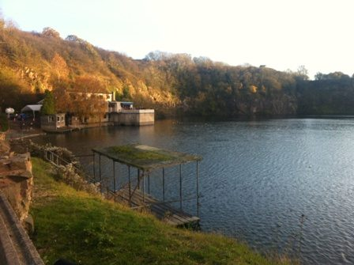
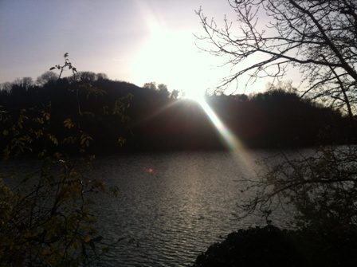

Sports Diver Training Weekend - 10th / 11th November 2012

Introduction
The Argonauts took on three brand new trainees in 2012 - Charlie, Claire and Kirsty. We qualified as Ocean Divers in April 2012, thanks to a fantastic introduction to diving from the club instructors, Aidan, Gareth and Trevor.
After a summer of fun-filled diving, everywhere from Swanage to the Somosomo straits in Fiji, we were keen to take on Sports Diver, which would let us go on dives down to 35m - particularly good for exploring wrecks - and also improve our safety and rescue skills.
Unlike Ocean Diver, which has a lot of pool and lecture sessions before you get into the open water, the emphasis in the Sports Diver qualification is on the open water dives. Although we'd had a brilliant time at our last Stoney trip (thanks in the main to the good humour of our instructors, and endless supply of snacks!), by the time November 10th rolled around, and winter had set in for good, we were facing the qualification weekend with some trepidation ...
Diving
Day 1: Saturday 10th November
After a restorative Full English at the B&B, we arrived at doors-open at Stoney Cove to collect our kit, as we had a full schedule of three dives to complete that day. Although over-cast, some patches of sunlight started poking through, promising a more cheerful afternoon, and the quarry looked very picturesque in its autumn foliage. After the familiar struggle to get into our semi-dry suits, we were ready for diving!
Dive 1
The first dive of the day was mainly exploratory, to get ourselves accustomed to the new kit and being back in the water. Given our initial nerves, we were all hugely relieved after an enjoyable first dive - not as cold as we feared! - and very satisfied to chart our progress since Ocean Diver.
Dive 2
A long dive this one at 39 minutes, but copious snacks during the surface interval powered us on! After starting the dive with mask-clearing practice, we practised navigation with a distance line round the submarine and platform, before heading down to the cockpit to have our first go at deploying a delayed surface marker buoy. Technique was not the prettiest first time round (some "saggy sausages" at the surface....) but we managed it in the end.
Dive 3
After some fairly unsuccessful compass pilotage on the surface (no comment about women and navigation skills at this point),we managed to get the grip of it underwater, and then hot-finned down to the cockpit for a deep water mask clear, and then another go at the D.S.M.B. (much cleaner this time), before finishing the dive with weight-belt removal.
Saturday finished tired but happy with a curry at the local Indian, followed by a revision session over the BSAC 88 tables and an early night!
Day 2: Sunday 11th November
Only 2 dives today, and we started the day feeling much more cheerful after the successes of Day 1 - even slithering into clammy semi-dry suits couldn't dampen our enthusiasm!
Dive 1
Our deepest dive of the weekend yet, down to the helicopter at 22m. The cold and low visibility at that depth took us by surprise - and descending down the wall into the gloom was a surprisingly eerie experience. However, it was great to have the experience during training dives, so we're more prepared next time. That said were all delighted to see the familiar site of the cockpit hove into view, and managed the D.S.M.B with significantly more flair than the day before.
Dive 2
Last dive of the day! After our deeper first dive, we kept this one fairly shallow, and focused on our rescue skills, including the dreaded "nose snogs", also known as rescue breaths.
All-in-all, a super fun diving weekend - and huge thanks to our instructors Aidan and Trevor!
